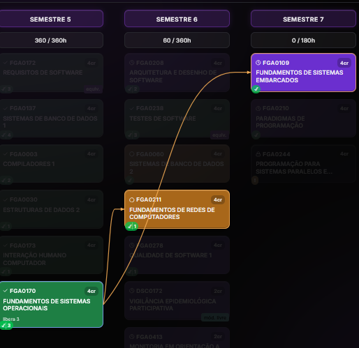
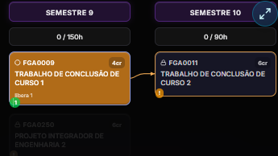
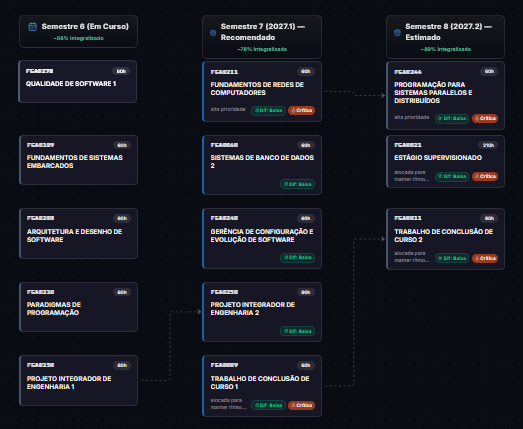
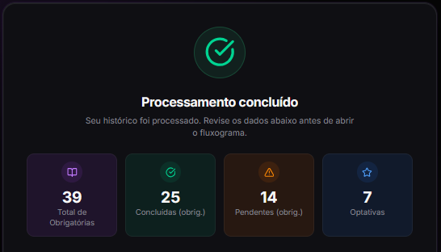
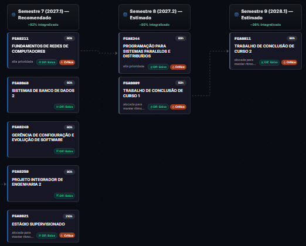
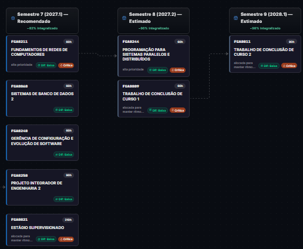
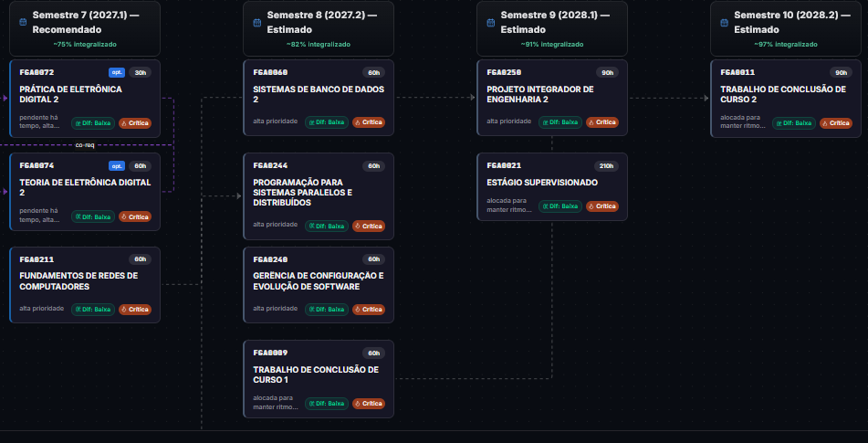
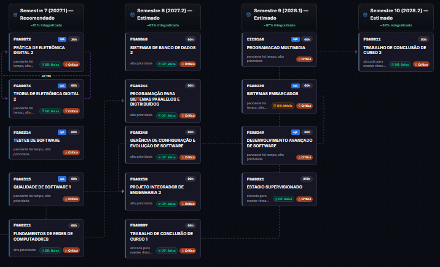

Dados brutos e evidências — Métricas funcionais¶
1. Entrada e organização¶
A entrada única é H0, matriz 6360/1 — 2017.1: 44 registros (37 APR e sete MATR), 15 obrigatórias pendentes e oito equivalências. C0–C5 alteram somente a configuração de uso. Os originais acadêmicos e os identificadores pessoais permanecem fora da documentação pública.
A avaliação consolidada é EC-01. As capturas de Gabriel estão incorporadas abaixo como G-01 e identificadas pela equipe como H0. Elas preservam os valores e posições exibidos em cada registro; não substituem a conferência individual nem são usadas para comprovar resultados de outra execução.
Os arquivos em testes/evidencias/funcionais/execucao-h0-2026-11-15/ e os CSVs existentes preservam a coleta técnica. Suas 102 linhas de verificação e respectivas classificações não foram alteradas neste fechamento. As tabelas desta página registram a complementação e o julgamento consolidado de EC-01: 113 unidades funcionais, distribuídas em 1 relação de pré-requisito, 2 de co-requisito, 15 obrigatórias, 44 registros, 8 equivalências, 7 expectativas de onboarding e 36 restrições (23 de carga, 10 de oferta e 3 de calendário).
2. Arquivos de coleta preservados¶
Tabela 1 — Arquivos de coleta preservados.
| Registro | Uso |
|---|---|
c0-plano.json e variantes C1–C5 |
Semestres, disciplinas, cargas e reservas observadas |
h0-importado.json e fluxograma-status.txt |
Conferência por código, período e status |
politica-projecao.txt |
Distinção entre matrícula e projeção condicionada à aprovação |
ct02-plano-interface.json e ct02-grafo.txt |
Posição do par explicitamente selecionado |
ambiente-coleta.json |
Ambiente registrado; versão do servidor não identificada |
execucoes.csv e verificacoes_funcionais.csv |
Contexto e unidades da coleta técnica |
Fonte: registro da avaliação EC-01, organizado pela equipe.
3. Registros por caso¶
CT-01 — Pré-requisitos¶
Meta: TVP=0%. Resultado consolidado: 0/1=0%. FGA0170 permanece MATR em 2026.2 e FGA0211 está prevista em 2027.1. A projeção não transforma a matrícula em aprovação real. TCC 1/2 é uma ilustração adicional, sem inclusão no denominador da relação respaldada pela referência.
O registro é apresentado na Figura 1.

Figura 1 — Sequência FGA0170/FGA0211 no registro de Gabriel. Fonte: captura de Gabriel, 15/11; registro G-01, entrada identificada pela equipe como H0.
O registro é apresentado na Figura 2.

Figura 2 — Sequência TCC 1/2 como registro visual; não integra o denominador oficial conferido. Fonte: captura de Gabriel, 15/11; registro G-01, entrada identificada pela equipe como H0.
CT-02 — Co-requisitos¶
Meta: TVC=0%. Resultado consolidado: 0/2=0%. Na seleção explícita do par, FGA0072 e FGA0074 aparecem em 2027.1.
O registro é apresentado na Figura 3.
Figura 3 — Par FGA0072/FGA0074 alocado em 2027.1. Fonte: No Fluxo, 15/11; registro da seleção explícita do par.
O registro é apresentado na Figura 4.
Figura 4 — Distribuição do par no registro G-01, distinta da alocação consolidada. Fonte: captura de Gabriel, 15/11; registro G-01, entrada identificada pela equipe como H0.
Tabela 2 — Comparação dos registros de co-requisitos.
| Registro | Alocação observada | Uso no julgamento |
|---|---|---|
| G-01 | Par em semestres diferentes | Preservação da observação de Gabriel |
| EC-01 — par consolidado | Ambas em 2027.1 | Duas relações dirigidas conformes, denominador de TVC=2 |
Fonte: registro da avaliação EC-01, organizado pela equipe.
A divergência entre registros foi mantida visível. Não se presume correção no produto entre execuções nem se atribui uma mudança a versão não identificada.
CT-03 — Obrigatórias pendentes¶
Meta: CDO=100%. Resultado: 14/15=93,33%. FGA0206 está na referência de pendências e não aparece no plano-base completo nem na lista de não alocadas. O diagnóstico depende do cruzamento das 15 unidades, não apenas de um trecho da imagem.
O registro é apresentado na Figura 5.

Figura 5 — Trecho do planejamento usado na investigação da ausência de FGA0206. Fonte: captura de Gabriel, 15/11; registro G-01, entrada identificada pela equipe como H0.
CT-04 — Tratamento do histórico¶
Meta: TDH=0%. Resultado: 0/44=0%. A conferência usa código e período, preservando as ocorrências repetidas. Equivalências podem ser representadas pelo destino oficial; MATR não é aprovação concluída.
O registro é apresentado na Figura 6.

Figura 6 — Resumo de importação apresentado ao avaliador. Fonte: captura de Gabriel, 15/11; registro G-01, entrada identificada pela equipe como H0.
Leitura do resumo: a captura G-01 exibe 25 obrigatórias concluídas e 14 pendentes. A referência normalizada adotada no consolidado é 24 satisfeitas e 15 pendentes. Os valores da captura foram preservados; esse resumo agregado não foi usado como prova da comparação individual nem como denominador de CDO/TDH.
CT-05 — Equivalências¶
Meta: TAE=0%. Resultado: 0/8=0%. Foram conferidas seis relações concluídas e duas em andamento. As oito relações estão na referência de H0; a captura ilustra algumas, sem representar cobertura visual de todas.
O registro é apresentado na Figura 7.
Figura 7 — Indicação visual de equivalências em disciplinas do fluxograma. Fonte: captura de Gabriel, 15/11; registro G-01, entrada identificada pela equipe como H0.
CT-06 — Onboarding¶
Meta: COO=100%. Resultado: 5/7=71,43%. Os contratos abaixo definem o esperado antes do julgamento de EC-01.
Tabela 3 — Expectativas e resultados do onboarding.
| Cenário | Contrato de aceitação | Resultado observado | Atendido? |
|---|---|---|---|
| C1 | Selecionar 20 créditos deve representar 300h | 20 créditos/300h | Sim |
| C2 | Selecionar 32 créditos deve representar 480h | 32 créditos/480h | Sim |
| C5-4 | Quatro matérias devem sugerir 240h | 240h | Sim |
| C5-6 | Seis matérias devem sugerir 360h | 360h | Sim |
| C5-8 | Oito matérias devem sugerir 480h | 480h | Sim |
| C3 | Ao ativar trabalho/estágio, sugerir 20 créditos em lugar de 24 | Permanência em 24 créditos | Não |
| C4 | Objetivo velocidade deve produzir horizonte de dois semestres futuros no cenário | Permanência em três semestres | Não |
Fonte: registro da avaliação EC-01, organizado pela equipe.
A sugestão de carga do onboarding e o teto obrigatório de 480h têm funções diferentes. Os contratos de C3/C4 pertencem à aceitação do cenário, não às regras curriculares oficiais. As capturas Antes/Depois registram os estados da interface; os sete resultados são apurados pela tabela.
O registro é apresentado na Figura 8.

Figura 8 — Configuração antes da alteração de preferências. Fonte: captura de Gabriel, 15/11; registro G-01, entrada identificada pela equipe como H0.
O registro é apresentado na Figura 9.

Figura 9 — Configuração após a alteração de preferências. Fonte: captura de Gabriel, 15/11; registro G-01, entrada identificada pela equipe como H0.
CT-07 — Restrições semestrais¶
Meta: TVS=0% por tipo. O máximo obrigatório verificado é 480h. Oferta e calendário usam os quadros de controle OC-01 e CAL-01 definidos nas fontes do cenário.
Tabela 4 — TVS por tipo de restrição.
| Tipo | Universo | Violações | Resultado | Julgamento |
|---|---|---|---|---|
| Máximo de 480h | 23 semestres futuros | 0 | 0,00% | Conforme |
| Oferta OC-01 | Dez alocações de disciplinas | 1 | 10,00% | Não conforme |
| Calendário CAL-01 | Três condições de consulta | 1 | 33,33% | Não conforme |
Fonte: registro da avaliação EC-01, organizado pela equipe.
Tabela 5 — Quadro de oferta OC-01.
| Disciplina — OC-01 | Semestre previsto | Oferta de referência | Conforme? |
|---|---|---|---|
| FGA0211 | 2027.1 | 2027.1 | Sim |
| FGA0060 | 2027.1 | 2027.1 | Sim |
| FGA0109 | 2027.1 | 2027.1 | Sim |
| FGA0210 | 2027.1 | 2027.1 | Sim |
| FGA0240 | 2027.1 | 2027.1 | Sim |
| FGA0009 | 2027.1 | 2027.1 | Sim |
| FGA0244 | 2027.2 | Apenas 2027.1 no quadro de controle | Não |
| FGA0250 | 2027.2 | 2027.2 | Sim |
| FGA0021 | 2027.2 | 2027.2 | Sim |
| FGA0011 | 2028.1 | 2028.1 | Sim |
Fonte: registro da avaliação EC-01, organizado pela equipe.
Tabela 6 — Quadro de calendário CAL-01.
| Condição — CAL-01 | Início esperado | Início observado | Conforme? |
|---|---|---|---|
| Consulta normal | 2027.1 | 2027.1 | Sim |
| Consulta com resposta tardia | 2027.1 | 2027.1 | Sim |
| Falha de consulta com fallback | 2027.1 | 2027.2 | Não |
Fonte: registro da avaliação EC-01, organizado pela equipe.
O registro é apresentado na Figura 10.

Figura 10 — Distribuição apresentada no registro de carga de 240h. Fonte: captura de Gabriel, 15/11; registro G-01, entrada identificada pela equipe como H0.
O registro é apresentado na Figura 11.

Figura 11 — Distribuição apresentada no registro de carga de 360h. Fonte: captura de Gabriel, 15/11; registro G-01, entrada identificada pela equipe como H0.
Os recortes de carga de Gabriel mostram distribuições próprias de G-01. Não são usados para atribuir 540h à execução consolidada nem para converter a sugestão de carga em obrigação. O julgamento final é o indicado nas tabelas por tipo.
4. Encerramento da execução¶
A configuração-base de 24 créditos foi restaurada, conforme confirmação de Gustavo. As referências de H0 e os registros técnicos foram preservados. A análise responde às sete questões e julga as hipóteses; os resultados têm alcance limitado ao conjunto de cenários definido.
O processador python3 scripts/metricas_funcionais.py continua reprocessando os CSVs da coleta técnica. A consolidação EC-01 inclui os contratos e quadros de avaliação desta página; seu resultado não deve ser confundido com a saída daquele recorte de coleta.
Histórico de versão¶
| Membro | Contribuição | Data | Commit |
|---|---|---|---|
| Gabriel Mota | Consolidação dos dados brutos e evidências da avaliação funcional | 15/11 | dcfdb1a |
| Gustavo Fornaciari | Padronização da avaliação pelo histórico oficial H0 | 15/11 | f454d2c |
| Gabriel Mota | Recuperação das observações e capturas funcionais | 15/11 | 289a2a0 |
| Gustavo Fornaciari | Alinhamento ao H0 e preservação das evidências anteriores com cobertura identificada | 15/11 | 7a74d9e |
| Gustavo Fornaciari | Coleta assistida com H0, apuração e julgamento com cobertura identificada | 15/11 | f5e77d5 |
| Gustavo Fornaciari | Ampliação da análise, respostas GQM e síntese dos julgamentos | 15/11 | f5e77d5 |
| Gustavo Fornaciari | Explicitação das metas nas tabelas de resultados e avaliação | 15/11 | f5e77d5 |